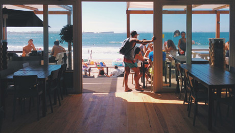

Cafés com a cara
do Brasil
Direto das fazendas de Minas Gerais
Direto das fazendas de Minas Gerais


O café é uma bebida produzida a partir dos grãos torrados do fruto do cafeeiro. É servido tradicionalmente quente, mas também pode ser consumido gelado. Ele pe um estimulante, por possuir cafeína - geralmente 80 a 140mg para 207ml dependendo do método de preparação.
As condições climaticas não eram as melhores nessa primeira escolha e, entre 1800 e 1850, tentou-se o cultivo noutras regiões: o João Alberto Castelo Branco trouxe mudas do Pará.
As condições climaticas não eram as melhores nessa primeira escolha e, entre 1800 e 1850, tentou-se o cultivo noutras regiões: o João Alberto Castelo Branco trouxe mudas do Pará.
As condições climaticas não eram as melhores nessa primeira escolha e, entre 1800 e 1850, tentou-se o cultivo noutras regiões: o João Alberto Castelo Branco trouxe mudas do Pará.

As condições climáticas não eram as melhores nessa primeira escolha e, entre 1800 e 1850, tentou-se o cultivo
Ver mapa
As condições climáticas não eram as melhores nessa primeira escolha e, entre 1800 e 1850, tentou-se o cultivo
Ver mapa
As condições climáticas não eram as melhores nessa primeira escolha e, entre 1800 e 1850, tentou-se o cultivo
Ver mapaPromoções e eventos mensais